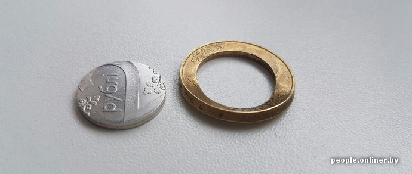
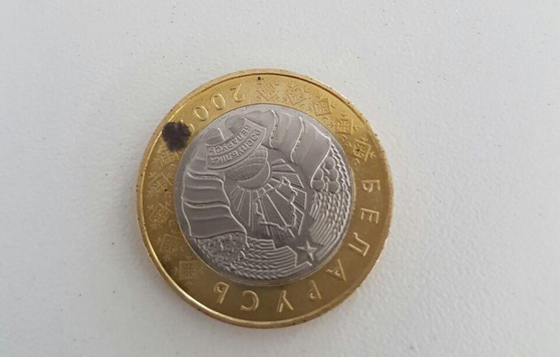

Можно ли обменять испорченные монеты на новые?
По стопам деноминации
В первый день после деноминации белорусы заметили на многих монетах пятна темного цвета и потемнения. Кто-то жалуется на некачественные копейки. А буквально сегодня в соцсетях появилось фото двухрублевки, которая, по словам владельца, распалась на две части у него в руках. Что же делать, если монеты вдруг поцарапались, затерлись, погнулись или разломались? Onliner.by задал этот вопрос регулятору.
В ответ мы получили «Инструкцию о порядке определения платежности и обмена банкнот и монет», которая была принята еще 6 июня. Кроме слова «монеты» в названии, сам текст инструкции содержит отдельный пункт, в котором перечислены признаки монет, которые банк может обменять. По документу Нацбанк определяет два типа монет — «платежные» и «неплатежные». Первые могут не принять в магазине, но должны обменять в банке за деньги или в Нацбанке бесплатно.
Итак, какие монеты относятся к платежным?
1. Монеты, имеющие незначительные повреждения
